Jun 2nd, 2022 (prune finalized – almost)¶
Motivation: Increasing kmeans n_init helps. For prune: no great insight, but probably have to use different threshold for bold and ca. But definitely we need prune, otherwise there is a lot of junk in there
# HIDE CODE
import os
import sys
from pprint import pprint
from copy import deepcopy as dc
from os.path import join as pjoin
from scipy.ndimage import gaussian_filter
from IPython.display import display, IFrame, HTML
# tmp & extras dir
git_dir = pjoin(os.environ['HOME'], 'Dropbox/git')
extras_dir = pjoin(git_dir, 'jb-Ca-fMRI/_extras')
fig_base_dir = pjoin(git_dir, 'jb-Ca-fMRI/figs')
tmp_dir = pjoin(git_dir, 'jb-Ca-fMRI/tmp')
# GitHub
sys.path.insert(0, pjoin(git_dir, '_Ca-fMRI'))
from model.configuration import Config
from model.mouse import Mice
from analysis.group import *
from utils.render import *
# warnings, tqdm, & style
warnings.filterwarnings('ignore', category=DeprecationWarning)
from tqdm.notebook import tqdm
%matplotlib inline
set_style()
def quick_show(
data,
vmin=0.1,
vmax=None,
figsize=None,
cmap='magma',
ylabel_fontsize=11.5,
show: bool = True, ):
num = max(len(tr['proj-top']) for tr in data.values())
figsize = figsize if figsize else (13.5, 1.6 * len(data))
fig, axes = create_figure(
nrows=len(data),
ncols=num,
figsize=figsize,
tight_layout=False,
constrained_layout=False,
reshape=True,
)
for i, (lbl, tr) in enumerate(data.items()):
for j in range(num):
ax = axes[i, j]
if j >= len(tr['proj-top']):
ax.remove()
else:
ax.imshow(mwh(tr['top'] == 0, tr['top']), cmap='Greys_r')
if np.nanmax(tr['proj-top'][j]) > 1:
_cmap = get_cluster_cmap(range(len(tr['proj-top']) - 1))
_vmax = None
else:
_cmap = cmap
_vmax = vmax
ax.imshow(
mwh(tr['proj-top'][j] < vmin, tr['proj-top'][j]),
cmap=_cmap, vmin=vmin, vmax=_vmax,
)
if j == 0:
ax.set_ylabel(lbl, fontsize=ylabel_fontsize)
remove_ticks(axes)
if show:
plt.show()
else:
plt.close()
return fig, axes
mice = Mice(128)
mako = sns.color_palette('mako', as_cmap=True)
rocket = sns.color_palette('rocket', as_cmap=True)
pal = {'ca2': mako(0.6), 'bold-lite': rocket(0.6)}
task = 'rest'
band_ca = (0.01, 0.5)
mice.setup_func_data(task, band_ca=band_ca)
num_k, p = 10, 20
perc = f'p{p}-sample'
props_base = {
'perc': perc,
'num_k': num_k,
'mice': mice,
'task': task,
'metric': 'pearson',
'match_using': 'gam',
'match_metric': 'euclidean',
'graph_type': 'real',
'verbose': False,
}
props_ca = {'mode': 'ca2', **props_base}
props_bo = {'mode': 'bold-lite', **props_base}
b = (0.01, 0.5)
mice.setup_func_data(task, band_ca=b)
gr_ca = Group(**props_ca).fit_group()
pr_ca = gr_ca.prune(thres=0.003, ci=0.95, n_resamples=int(1e3))
pi = bn.nanmean(gr_ca.run_pi, -3)
pi_pr = bn.nanmean(pr_ca['pi_prune_run'], -3)
h = sp_stats.entropy(pi, axis=-2) / np.log(gr_ca.num_k)
h_pr = sp_stats.entropy(pi_pr, axis=-2) / np.log(gr_ca.num_k)
pr_ca['votes']['votes'].sum() / (pr_ca['votes']['votes'].sum() + (~pr_ca['votes']['votes']).sum())
0.5086842105263157
pr_ca['votes']['num_zeroed'] / (pr_ca['votes']['num_accepted'] + pr_ca['votes']['num_zeroed'])
0.4987919463087248
fig, axes = create_figure(1, 2, (10, 4))
bins = np.linspace(0, 1, 101)
bins[-1] += 1e-5
sns.histplot(
pi[np.isfinite(pi)],
bins=bins,
color='dimgrey',
label='raw',
ax=axes[0],
)
sns.histplot(
pi_pr[np.isfinite(pi_pr)],
bins=bins,
color='tomato',
label='pr',
ax=axes[0],
)
sns.histplot(
h[np.isfinite(h)],
bins=bins,
color='dimgrey',
label='raw',
ax=axes[1],
)
sns.histplot(
h_pr[np.isfinite(h_pr)],
bins=bins,
color='tomato',
label='pr',
ax=axes[1],
)
for ax in axes.flat:
ax.legend()
fig.suptitle(f"bins = [{bins[0]}, {bins[1]}, ..., {max(bins)})", fontsize=17, y=1.05)
plt.show()
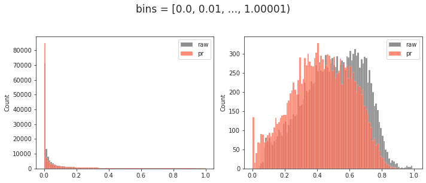
fig, axes = create_figure(1, 2, (10, 4))
bins = np.linspace(0.01, 1, 100)
bins[-1] += 1e-5
sns.histplot(
pi[np.isfinite(pi)],
bins=bins,
color='dimgrey',
label='raw',
ax=axes[0],
)
sns.histplot(
pi_pr[np.isfinite(pi_pr)],
bins=bins,
color='tomato',
label='pr',
ax=axes[0],
)
sns.histplot(
h[np.isfinite(h)],
bins=bins,
color='dimgrey',
label='raw',
ax=axes[1],
)
sns.histplot(
h_pr[np.isfinite(h_pr)],
bins=bins,
color='tomato',
label='pr',
ax=axes[1],
)
for ax in axes.flat:
ax.legend()
fig.suptitle(f"bins = [{bins[0]}, {bins[1]}, ..., {max(bins)})", fontsize=17, y=1.05)
plt.show()
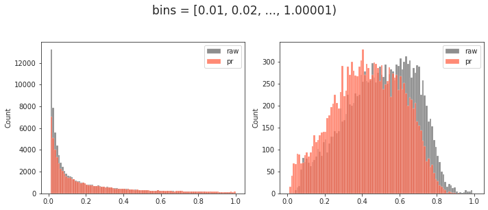
This was a good answer¶
aligned_new, centroids = gr_ca.align_post_prune(pr_ca['pi_prune_run'])
aligned_new_avg = bn.nanmean(bn.nanmean(bn.nanmean(bn.nanmean(aligned_new, 3), 2), 1), 0)
centroids /= np.nansum(centroids, -2, keepdims=True)
gr_ca.avg()
gr_ca.fit_meta
{ 'time_start': '2022_06_03_15-57', 'min_runs_thresh': 0.6, 'min_node_thresh': 0.7, 'best_node_freq_q': 0.93, 'num_total_runs': 110, 'fraction_accepted_runs': 0.6727272727272727, 'fraction_good_nodes': 0.7368421052631579, 'time_end': '2022_06_03_15-59' }
perf = ''
a, b = gr_ca.pi_symmetry_score(decimals=4)
perf += f"raw \t. . .\tovp: {a[-1]:0.4f}, disj: {b[-1]:0.4f}\n"
a, b = gr_ca.pi_symmetry_score(pr_ca['pi_prune_avg'], decimals=4)
perf += f"pr \t. . .\tovp: {a[-1]:0.4f}, disj: {b[-1]:0.4f}\n"
a, b = gr_ca.pi_symmetry_score(aligned_new_avg, decimals=4)
perf += f"pr+algn\t. . .\tovp: {a[-1]:0.4f}, disj: {b[-1]:0.4f}\n"
print(perf)
raw . . . ovp: 0.9854, disj: 0.9658 pr . . . ovp: 0.9818, disj: 0.9632 pr+algn . . . ovp: 0.9823, disj: 0.9632
d2p = {
'raw': gr_ca.trim2d(gr_ca.project_vec()),
'pr(new)': gr_ca.trim2d(gr_ca.project_vec(pr_ca['pi_prune_avg'])),
'ctrd': gr_ca.trim2d(gr_ca.project_vec(centroids)),
'pr+algn(new)': gr_ca.trim2d(gr_ca.project_vec(aligned_new_avg)),
}
_ = quick_show(d2p, vmax=1.0, figsize=(48, 13), ylabel_fontsize=25)
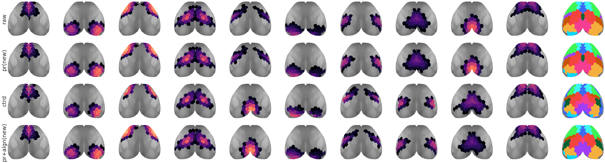
Fewer seeds?¶
aligned_new_avg = bn.nanmean(bn.nanmean(bn.nanmean(bn.nanmean(
aligned_new[..., :115, :, :], 3), 2), 1), 0)
perf = ''
a, b = gr_ca.pi_symmetry_score(decimals=4)
perf += f"raw \t. . .\tovp: {a[-1]:0.4f}, disj: {b[-1]:0.4f}\n"
a, b = gr_ca.pi_symmetry_score(pr_ca['pi_prune_avg'], decimals=4)
perf += f"pr \t. . .\tovp: {a[-1]:0.4f}, disj: {b[-1]:0.4f}\n"
a, b = gr_ca.pi_symmetry_score(aligned_new_avg, decimals=4)
perf += f"pr+algn\t. . .\tovp: {a[-1]:0.4f}, disj: {b[-1]:0.4f}\n"
print(perf)
raw . . . ovp: 0.9854, disj: 0.9658 pr . . . ovp: 0.9818, disj: 0.9632 pr+algn . . . ovp: 0.9820, disj: 0.9737
d2p = {
'raw': gr_ca.trim2d(gr_ca.project_vec()),
'pr(new)': gr_ca.trim2d(gr_ca.project_vec(pr_ca['pi_prune_avg'])),
'ctrd': gr_ca.trim2d(gr_ca.project_vec(centroids)),
'pr+algn(new)': gr_ca.trim2d(gr_ca.project_vec(aligned_new_avg)),
}
_ = quick_show(d2p, vmax=1.0, figsize=(48, 13), ylabel_fontsize=25)
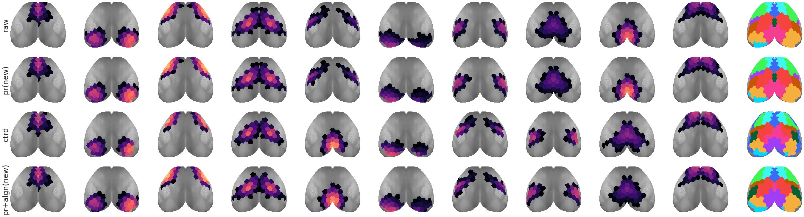
Now experiment with different kws¶
gr_ca.kw_kmeans
{'n_init': 100, 'max_iter': 300, 'tol': 0.0001}
gr_ca.kw_kmeans = {
'n_init': 100,
'max_iter': 500,
'tol': 1e-8,
}
aligned_new, centroids = gr_ca.align_post_prune(pr_ca['pi_prune_run'])
aligned_new_avg = bn.nanmean(bn.nanmean(bn.nanmean(bn.nanmean(
aligned_new, 3), 2), 1), 0)
centroids /= np.nansum(centroids, -2, keepdims=True)
gr_ca.avg()
perf = ''
a, b = gr_ca.pi_symmetry_score(decimals=4)
perf += f"raw \t. . .\tovp: {a[-1]:0.4f}, disj: {b[-1]:0.4f}\n"
a, b = gr_ca.pi_symmetry_score(pr_ca['pi_prune_avg'], decimals=4)
perf += f"pr \t. . .\tovp: {a[-1]:0.4f}, disj: {b[-1]:0.4f}\n"
a, b = gr_ca.pi_symmetry_score(aligned_new_avg, decimals=4)
perf += f"pr+algn\t. . .\tovp: {a[-1]:0.4f}, disj: {b[-1]:0.4f}\n"
print(perf)
d2p = {
'raw': gr_ca.trim2d(gr_ca.project_vec()),
'pr(new)': gr_ca.trim2d(gr_ca.project_vec(pr_ca['pi_prune_avg'])),
'ctrd': gr_ca.trim2d(gr_ca.project_vec(centroids)),
'pr+algn(new)': gr_ca.trim2d(gr_ca.project_vec(aligned_new_avg)),
}
_ = quick_show(d2p, vmax=1.0, figsize=(48, 13), ylabel_fontsize=25)
raw . . . ovp: 0.9854, disj: 0.9658 pr . . . ovp: 0.9818, disj: 0.9632 pr+algn . . . ovp: 0.9821, disj: 0.9605
gr_ca.kw_kmeans
{'n_init': 100, 'max_iter': 500, 'tol': 1e-08}
hist, bin_edges = np.histogram(h_pr[np.isfinite(h_pr)], bins=100)
len(hist), len(bin_edges)
(100, 101)
plt.plot(hist)
[<matplotlib.lines.Line2D object at 0x7fd4a1b65ca0>]
maxes = np.argsort(hist)[::-1][:10]
maxes
array([34, 33, 31, 48, 49, 53, 0, 32, 41, 51])
i_max = 34
bin_edges[i_max], bin_edges[i_max + 1]
(0.29531555429025297, 0.3040013058870251)
ids = list(zip(*np.where(np.logical_and(bin_edges[i_max] <= h_pr, h_pr < bin_edges[i_max + 1]))))
len(ids)
490
ids[:5]
[(0, 0, 0, 9), (0, 0, 0, 19), (0, 0, 0, 37), (0, 0, 0, 83), (0, 0, 0, 85)]
sns.histplot([nn for i, j, k, nn in ids])
<AxesSubplot:ylabel='Count'>
i, j, k, nn = ids[0]
pi_pr.shape
(10, 3, 4, 10, 152)
sns.histplot(pi[i, j, k, :, nn], bins=np.linspace(0, 1, 101), color='dimgrey')
sns.histplot(pi_pr[i, j, k, :, nn], bins=np.linspace(0, 1, 101), color='tomato')
<AxesSubplot:ylabel='Count'>
pi[i, j, k, :, nn]
array([0.03841579, 0.00142857, 0.27222752, 0.00740019, 0.00142857, 0.01184148, 0.3944328 , 0.00144086, 0.26995564, 0.00142857])
pi_pr[i, j, k, :, nn]
array([0. , 0. , 0.44900629, 0. , 0. , 0. , 0. , 0. , 0.55099371, 0. ])
np.round(pi[i, j, k, :, nn], 2)
array([0.04, 0. , 0.27, 0.01, 0. , 0.01, 0.39, 0. , 0.27, 0. ])
gr_ca.run_pi[i, j, k, ..., nn].shape
(250, 10)
bad_seeds = np.where(np.isnan(gr_ca.run_pi[i, j, k, ..., nn]).sum(1) == 10)[0]
x = np.delete(gr_ca.run_pi[i, j, k, ..., nn], bad_seeds, axis=0)
sns.histplot(x[:, 8], bins=np.linspace(0, 1, 51))
<AxesSubplot:ylabel='Count'>
seeds_a = np.where(x[:, 8] < 0.002)[0]
seeds_b = np.where(x[:, 8] > 0.98)[0]
len(seeds_a), len(seeds_b)
(142, 16)
np.argmin(x[:, 8]), np.argmax(x[:, 8])
(89, 226)
np.round(x[89], 2)
array([0. , 0. , 0.99, 0. , 0. , 0. , 0. , 0. , 0. , 0. ])
np.round(x[226], 2)
array([0. , 0. , 0. , 0. , 0. , 0. , 0. , 0. , 0.99, 0. ])
a = gr_ca.run_pi[i, j, k][89]
b = gr_ca.run_pi[i, j, k][226]
tra = gr_ca.project_vec(a)
trb = gr_ca.project_vec(b)
tra = gr_ca.trim2d(tra)
trb = gr_ca.trim2d(trb)
_ = quick_show({'a': tra, 'b': trb}, vmax=1.0)
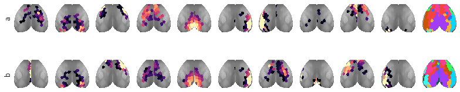
gr_ca.run_pi.shape
(10, 3, 4, 250, 10, 152)
%%time
dims = {'sub': 10, 'ses': 3, 'run': 4, 'seed': 250}
b_anim = bootstrap(
x=gr_ca.run_pi,
n_resamples=int(1e3),
batch=5,
skip=['sub'],
dims=dims,
est=bn.nanmean,
est_axis=-3,
)
b_anim = bn.nanmean(bn.nanmean(b_anim, 3), 2)
b_anim.shape
CPU times: user 3min 10s, sys: 1min 43s, total: 4min 53s
Wall time: 4min 53s
(1000, 10, 10, 152)
se_anim = np.nanstd(b_anim, axis=0, ddof=1)
for kk in range(10):
sns.histplot(b_anim[:, i, kk, nn], bins=np.linspace(0, 1, 51), color=f'C{kk}')
plt.axvline(pi[i, j, k, kk, nn], color=f'C{kk}', ls='--')
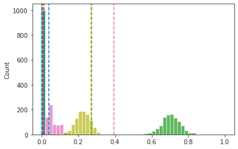
np.round(pi[i, j, k, :, nn], 2)
array([0.04, 0. , 0.27, 0.01, 0. , 0.01, 0.39, 0. , 0.27, 0. ])
np.round(bn.nanmean(b_anim, 0)[i][..., nn], 2)
array([0.01, 0. , 0.7 , 0. , 0. , 0. , 0.05, 0. , 0.22, 0. ])
np.round(bn.nanmean(gr_ca.run_pi[i, j, k, ..., nn], 0), 2)
array([0.04, 0. , 0.27, 0.01, 0. , 0.01, 0.39, 0. , 0.27, 0. ])
aaa = np.round(bn.nanmean(bn.nanmean(bn.nanmean(bn.nanmean(
gr_ca.run_pi[..., nn], 3), 2), 1), 0), 2)
aaa
array([0.03, 0. , 0.71, 0. , 0. , 0.01, 0.04, 0. , 0.2 , 0.01])
sp_stats.entropy(aaa) / np.log(10)
0.3870045359819519
aaa[aaa < 0.05] = 0
aaa /= np.sum(aaa)
aaa
array([0. , 0. , 0.78021978, 0. , 0. , 0. , 0. , 0. , 0.21978022, 0. ])
sp_stats.entropy(aaa) / np.log(10)
0.22871235196577525
bbb = bn.nanmean(bn.nanmean(bn.nanmean(pi_pr, 2), 1), 0)[:, nn]
bbb
array([0.01158059, 0. , 0.75821579, 0. , 0. , 0. , 0.0101491 , 0. , 0.22005453, 0. ])
sp_stats.entropy(bbb) / np.log(10)
0.27847825830999656
sp_stats.entropy(np.round(bn.nanmean(bn.nanmean(bn.nanmean(bn.nanmean(
gr_ca.run_pi[..., nn], 3), 2), 1), 0), 2))
for kk in range(10):
sns.histplot(gr_ca.run_pi[i, j, k, ..., kk, nn], bins=np.linspace(0, 1, 51), color=f'C{kk}')
plt.axvline(pi[i, j, k, kk, nn], color=f'C{kk}', ls='--')
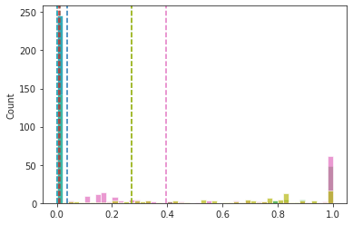
kk = 6
sns.histplot(gr_ca.run_pi[i, j, k, ..., kk, nn])
plt.axvline(bn.nanmean(gr_ca.run_pi[i, j, k, ..., kk, nn]))
<matplotlib.lines.Line2D object at 0x7f3b54b77fd0>
Finalize below¶
mice = Mice(128)
mako = sns.color_palette('mako', as_cmap=True)
rocket = sns.color_palette('rocket', as_cmap=True)
pal = {'ca2': mako(0.6), 'bold-lite': rocket(0.6)}
task = 'rest'
band_ca = (0.01, 0.5)
mice.setup_func_data(task, band_ca=band_ca)
num_k, p = 10, 20
perc = f'p{p}-sample'
props_base = {
'perc': perc,
'num_k': num_k,
'mice': mice,
'task': task,
'metric': 'pearson',
'match_using': 'gam',
'match_metric': 'euclidean',
'graph_type': 'real',
'verbose': False,
}
props_ca = {'mode': 'ca2', **props_base}
props_bo = {'mode': 'bold-lite', **props_base}
b = (0.01, 0.5)
mice.setup_func_data(task, band_ca=b)
gr_ca = Group(**props_ca).fit_group()
pr_ca = gr_ca.prune(n_resamples=int(7e3))
pi = bn.nanmean(gr_ca.run_pi, -3)
pi_pr = pr_ca['pi_prune_run'].copy()
h = sp_stats.entropy(pi, axis=-2) / np.log(gr_ca.num_k)
h_pr = sp_stats.entropy(pi_pr, axis=-2) / np.log(gr_ca.num_k)
i1, i2, i3, i4, num_k, num_n = gr_ca.run_pi.shape
dims = {'sub': i1, 'ses': i2, 'run': i3, 'seed': i4}
%%time
b_anim = bootstrap(
x=gr_ca.run_pi,
dims=dims,
skip=['sub'],
n_resamples=int(1e3),
batch=5,
est=bn.nanmean,
est_axis=-3,
)
b_anim = bn.nanmean(bn.nanmean(b_anim, 3), 2)
b_anim.shape
CPU times: user 3min 4s, sys: 1min 41s, total: 4min 45s
Wall time: 4min 46s
(1000, 10, 10, 152)
se_anim = np.nanstd(b_anim, axis=0, ddof=1)
pi_anim = bn.nanmean(bn.nanmean(pi, 2), 1)
i, j, k, kk, nn = pi.shape
votes = np.zeros((nn, i, kk))
thres = 0.003
ci = 0.95
for anim in range(i):
n_missing = pi[anim].reshape(-1, kk, nn)
n_missing = np.isnan(n_missing).mean(1).mean(1)
n_missing = (n_missing == 1).sum()
dof = j * k - n_missing - 1
t_val = sp_stats.t.ppf(ci, dof)
looper = itertools.product(
range(nn), range(kk))
for node, oc in looper:
mu = pi_anim[anim, oc, node]
se = se_anim[anim, oc, node]
lower = mu - t_val * se
if np.isnan(lower):
votes[node, anim, oc] = np.nan
elif lower <= thres:
votes[node, anim, oc] = 1
votes = votes.astype(bool)
votes.sum() / ((~votes).sum() + votes.sum())
0.5105921052631579
votes_dict = {'votes': votes.astype(bool)}
zeroed_vals = []
looper = itertools.product(
range(nn), range(i))
for node, anim in looper:
vote = votes_dict['votes'][node, anim]
zeroed_vals.extend(list(gr_ca.run_pi[anim, ..., node].reshape(-1, gr_ca.num_k)[:, vote].ravel()))
zeroed_vals = np.array(zeroed_vals)
zeroed_vals = zeroed_vals[np.isfinite(zeroed_vals)]
len(zeroed_vals)
17367294
np.max(zeroed_vals)
0.9879194630872491
sns.histplot(zeroed_vals, bins=np.linspace(0, 1, 101))
plt.yscale('log')
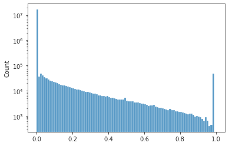
pi_prune = gr_ca.run_pi.copy()
looper = itertools.product(
range(nn), range(i))
for node, anim in looper:
vote = votes_dict['votes'][node, anim]
vote = vote.reshape(1, 1, 1, -1).astype(bool)
vote = np.repeat(vote, j, axis=0)
vote = np.repeat(vote, k, axis=1)
vote = np.repeat(vote, 250, axis=2)
pi_prune[anim, ..., node][vote] = 0.
pi_prune /= np.nansum(pi_prune, -2, keepdims=True)
pi_prune.shape
(10, 3, 4, 250, 10, 152)
pi_pr_avg = bn.nanmean(bn.nanmean(bn.nanmean(bn.nanmean(pi_prune, 3), 2), 1), 0)
d2p = {
'raw': gr_ca.trim2d(gr_ca.project_vec()),
'pr(new)': gr_ca.trim2d(gr_ca.project_vec(pi_pr_avg)),
}
_ = quick_show(d2p, vmax=1.0, figsize=(24, 4))
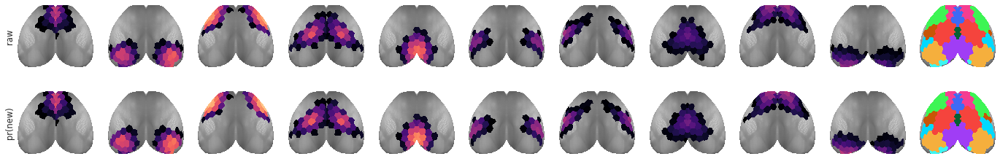
plt.plot(gr_ca.pi[0])
plt.plot(pi_pr_avg[0]);
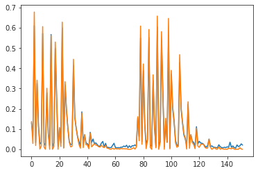
new Kmeans using pruned pi¶
def align_post_prune(self, pi: np.ndarray = None):
pi = pi if pi is not None else self.run_pi
accepted_runs, good_global = self._good_nodes(bn.nanmean(pi, -3))
data = []
for ii, jj, kk in accepted_runs:
x = pi_prune[ii, jj, kk]
bad_seeds = np.isnan(x).sum(-1).sum(-1) == gr_ca.num_k * len(gr_ca.n2l)
data.append(x[~bad_seeds].reshape(-1, len(gr_ca.n2l)))
data = np.concatenate(data)
pi_prune.shape
(10, 3, 4, 250, 10, 152)
accepted_runs, good_global = gr_ca._good_nodes(bn.nanmean(pi_prune, -3), 0.90)
len(accepted_runs), len(good_global)
(64, 118)
good_global
array([ 4, 5, 7, 8, 9, 11, 12, 13, 16, 17, 18, 19, 20, 21, 22, 24, 25, 26, 27, 28, 29, 30, 31, 32, 33, 34, 35, 36, 38, 39, 40, 41, 42, 43, 45, 46, 47, 48, 49, 50, 51, 52, 54, 55, 56, 57, 58, 60, 61, 62, 63, 64, 65, 66, 67, 68, 69, 71, 73, 80, 81, 83, 84, 85, 87, 88, 89, 92, 93, 94, 95, 96, 97, 99, 100, 101, 102, 103, 104, 105, 106, 107, 108, 109, 110, 111, 112, 113, 114, 115, 116, 117, 118, 119, 121, 122, 123, 124, 125, 126, 127, 128, 130, 131, 132, 133, 134, 136, 137, 138, 139, 140, 141, 142, 143, 144, 145, 147])
data = []
for ii, jj, kk in accepted_runs:
x = pi_prune[ii, jj, kk]
bad_seeds = np.isnan(x).sum(-1).sum(-1) == gr_ca.num_k * len(gr_ca.n2l)
data.append(x[~bad_seeds].reshape(-1, len(gr_ca.n2l)))
data = np.concatenate(data)
data.shape
(148400, 152)
nonan = np.where(np.isnan(data).sum(0) == 0)[0]
centroids = np.zeros((gr_ca.num_k, data.shape[-1]))
len(nonan)
118
_centroids, _ = fit_kmeans(
data=data[:, nonan],
n_clusters=self.num_k,
match_metric=self.sv_props['match_metric'],
random_state=self.mice.cfg.random_state,
)
centroids[:, nonan] = _centroids
global_mapping = self.align_centroid_to_structs(
pi_mv=centroids,
metric='cosine',
global_order=False,
)
centroids = centroids[global_mapping]
centroids /= np.nansum(centroids, -2, keepdims=True)
d2p = {
'raw': gr_ca.trim2d(gr_ca.project_vec()),
'pr(new)': gr_ca.trim2d(gr_ca.project_vec(pi_pr_avg)),
'ctrd': gr_ca.trim2d(gr_ca.project_vec(centroids)),
}
_ = quick_show(d2p, vmax=1.0, figsize=(24, 5))
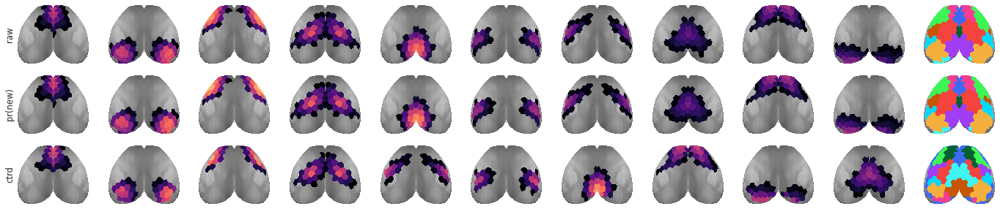
pi_prune.shape
(10, 3, 4, 250, 10, 152)
%%time
perms = {}
ner = Normalizer()
for ii, jj, kk in itertools.product(range(10), range(3), range(4)):
x = pi_prune[ii, jj, kk]
bad_seeds = np.isnan(x).sum(-1).sum(-1) == gr_ca.num_k * len(gr_ca.n2l)
if bad_seeds.sum() == len(x):
continue
x = x[~bad_seeds]
good = np.where(np.isnan(x).sum(0).sum(0) == 0)[0]
good = set(good).intersection(good_global)
good = np.array(sorted(good))
_x = x[..., good]
_x = np.where(~np.isnan(_x), _x, 0.0)
data2align = {
i: ner.fit_transform(v)
for i, v in enumerate(_x)
}
perms[(ii, jj, kk)] = find_best_mappings(
data=data2align,
centroids=ner.fit_transform(centroids[:, good]),
match_metric=self.align_metric,
global_order=self.global_order,
)
CPU times: user 11.1 s, sys: 9.29 ms, total: 11.1 s
Wall time: 11.1 s
aligned_new = np_nans(pi_prune.shape)
for ii, jj, kk in itertools.product(range(10), range(3), range(4)):
gmap_dict = perms.get((ii, jj, kk))
if not gmap_dict:
continue
for seed, gmap in gmap_dict.items():
aligned_new[ii, jj, kk, seed] = pi_prune[ii, jj, kk, seed][list(gmap.values())]
aligned_new.shape
(10, 3, 4, 250, 10, 152)
pr_ca['pi_prune_run'].shape
(10, 3, 4, 250, 10, 152)
aligned_new.shape
(10, 3, 4, 250, 10, 152)
aligned_new, centroids = gr_ca.align_post_prune(pr_ca['pi_prune_run'])
aligned_new_avg = bn.nanmean(bn.nanmean(bn.nanmean(bn.nanmean(aligned_new, 3), 2), 1), 0)
centroids /= np.nansum(centroids, -2, keepdims=True)
gr_ca.avg()
d2p = {
'raw': gr_ca.trim2d(gr_ca.project_vec()),
'pr(new)': gr_ca.trim2d(gr_ca.project_vec(pr_ca['pi_prune_avg'])),
'ctrd': gr_ca.trim2d(gr_ca.project_vec(centroids)),
'pr+algn(new)': gr_ca.trim2d(gr_ca.project_vec(aligned_new_avg)),
}
_ = quick_show(d2p, vmax=1.0, figsize=(24, 6))
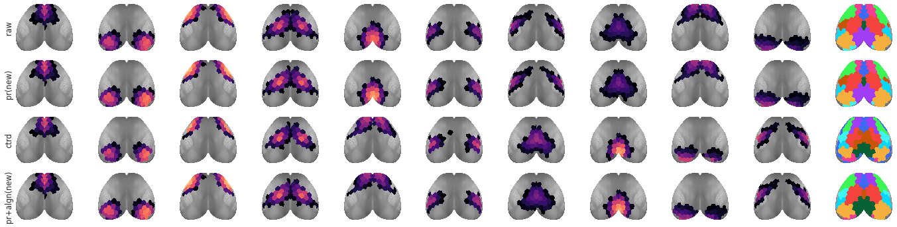
perf = ''
a, b = gr_ca.pi_symmetry_score(decimals=4)
perf += f"raw \t. . .\tovp: {a[-1]:0.4f}, disj: {b[-1]:0.4f}\n"
a, b = gr_ca.pi_symmetry_score(pr_ca['pi_prune_avg'], decimals=4)
perf += f"pr \t. . .\tovp: {a[-1]:0.4f}, disj: {b[-1]:0.4f}\n"
a, b = gr_ca.pi_symmetry_score(aligned_new_avg, decimals=4)
perf += f"pr+algn\t. . .\tovp: {a[-1]:0.4f}, disj: {b[-1]:0.4f}\n"
print(perf)
raw . . . ovp: 0.9869, disj: 0.9684 pr . . . ovp: 0.9818, disj: 0.9737 pr+algn . . . ovp: 0.9822, disj: 0.9737
a, b = gr_ca.pi_symmetry_score(aligned_new_avg, decimals=4)
a[-1], b[-1]
(0.9822, 0.9737)
d2p = {
'raw': gr_ca.trim2d(gr_ca.project_vec()),
'pr(new)': gr_ca.trim2d(gr_ca.project_vec(pi_pr_avg)),
'ctrd': gr_ca.trim2d(gr_ca.project_vec(centroids)),
'pr+algn(new)': gr_ca.trim2d(gr_ca.project_vec(aligned_new_avg)),
}
_ = quick_show(d2p, vmax=1.0, figsize=(24, 6))
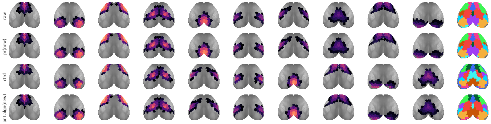
a, b = gr_ca.pi_symmetry_score(decimals=4)
a[-1], b[-1]
(0.9869, 0.9684)
a, b = gr_ca.pi_symmetry_score(pr_ca['pi_prune_avg'], decimals=4)
a[-1], b[-1]
(0.9836, 0.9737)
a, b = gr_ca.pi_symmetry_score(aligned_new_avg, decimals=4)
a[-1], b[-1]
(0.9838, 0.9763)
gr_ca.pi_symmetry_score()
( { 1: 0.992, 2: 0.974, 3: 0.993, 4: 0.993, 5: 0.998, 6: 0.991, 7: 0.988, 8: 0.992, 9: 0.987, 10: 0.961, -1: 0.987 }, { 1: 1.0, 2: 0.934, 3: 0.934, 4: 0.974, 5: 1.0, 6: 0.987, 7: 0.947, 8: 1.0, 9: 0.961, 10: 0.947, -1: 0.968 } )
gr_ca.pi_symmetry_score(pi_pr_avg)
( { 1: 0.991, 2: 0.966, 3: 0.993, 4: 0.992, 5: 0.997, 6: 0.99, 7: 0.99, 8: 0.989, 9: 0.987, 10: 0.941, -1: 0.984 }, { 1: 1.0, 2: 0.934, 3: 0.961, 4: 0.987, 5: 1.0, 6: 0.974, 7: 0.961, 8: 1.0, 9: 0.974, 10: 0.947, -1: 0.974 } )
gr_ca.pi_symmetry_score(aligned_new_avg)
( { 1: 0.992, 2: 0.966, 3: 0.993, 4: 0.992, 5: 0.99, 6: 0.988, 7: 0.997, 8: 0.987, 9: 0.943, 10: 0.989, -1: 0.984 }, { 1: 1.0, 2: 0.947, 3: 0.961, 4: 1.0, 5: 0.974, 6: 0.987, 7: 1.0, 8: 0.974, 9: 0.947, 10: 1.0, -1: 0.979 } )
h = sp_stats.entropy(gr_ca.run_pi, axis=-2) / np.log(gr_ca.num_k)
h_pr = sp_stats.entropy(pi_prune, axis=-2) / np.log(gr_ca.num_k)
h_aligned_new = sp_stats.entropy(aligned_new, axis=-2) / np.log(gr_ca.num_k)
sns.histplot(h[np.isfinite(h)], bins=np.linspace(0, 1, 201))
<AxesSubplot:ylabel='Count'>
sns.histplot(h_pr[np.isfinite(h_pr)], bins=np.linspace(0, 1, 201))
<AxesSubplot:ylabel='Count'>
sns.histplot(h_aligned_new[np.isfinite(h_aligned_new)], bins=np.linspace(0, 1, 201))
<AxesSubplot:ylabel='Count'>
sns.histplot(lower_vals[lower_vals < 0.1])
<AxesSubplot:ylabel='Count'>
lower_vals.shape
(10, 10, 152)
a, b, c = list(zip(*np.where(lower_vals == np.nanmin(lower_vals)))).pop()
a, b, c
(8, 9, 76)
pi[a, ..., b, c]
array([[ nan, 0.79359558, 0.00255474, nan], [0.00162684, 0.00236053, 0.017697 , 0.00246047], [ nan, nan, nan, nan]])
sns.histplot(
gr_ca.run_pi[a, ..., b, c][np.isfinite(gr_ca.run_pi[a, ..., b, c])],
bins=np.linspace(0, 1, 21),
)
<AxesSubplot:ylabel='Count'>
sns.histplot(b_anim[:, a, b, c])
<AxesSubplot:ylabel='Count'>
votes_dict = self.cast_votes(
se_anim=se_anim,
pi_run=pi,
thres=thres,
ci=ci,
)
H¶
b = (0.01, 0.5)
mice.setup_func_data(task, band_ca=b)
props_ca = {'mode': 'ca2', **props_base}
gr_ca = Group(**props_ca).fit_group()
gr_ca.avg()
pr_ca = gr_ca.prune(n_resamples=int(7e3))
gr_ca.run_pi = pr_ca['pi_prune_run']
gr_ca.pi = pr_ca['pi_prune_avg']
h_ca_10 = sp_stats.entropy(gr_ca.run_pi, axis=-2) / np.log(gr_ca.num_k)
h_avg_ca_10 = bn.nanmean(bn.nanmean(bn.nanmean(h_ca_10, 2), 1), 0)
gr_ca.num_k
10
"""b = (0.01, 0.5)
mice.setup_func_data(task, band_ca=b)
props_ca = {'mode': 'ca2', **props_base}
props_ca['num_k'] += 1
gr_ca = Group(**props_ca).fit_group()
gr_ca.avg()
pr_ca = gr_ca.prune(n_resamples=int(7e3))
gr_ca.run_pi = pr_ca['pi_prune_run']
gr_ca.pi = pr_ca['pi_prune_avg']
h_ca_11 = sp_stats.entropy(gr_ca.run_pi, axis=-2) / np.log(gr_ca.num_k)
h_avg_ca_11 = bn.nanmean(bn.nanmean(bn.nanmean(h_ca_11, 2), 1), 0)
gr_ca.num_k"""
props_bo = {'mode': 'bold-lite', **props_base}
gr_bo = Group(**props_bo).fit_group()
pr_bo = gr_bo.prune(n_resamples=int(7e3), ci=0.95)
gr_bo.run_pi = pr_bo['pi_prune_run']
gr_bo.pi = pr_bo['pi_prune_avg']
# _ = gr_bo._merge_vis(0.05)
h_bo_10 = sp_stats.entropy(gr_bo.run_pi, axis=-2) / np.log(gr_bo.num_k)
h_avg_bo_10 = bn.nanmean(bn.nanmean(bn.nanmean(h_bo_10, 2), 1), 0)
gr_bo.num_k
10
props_bo = {'mode': 'bold-lite', **props_base}
props_bo['num_k'] += 1
gr_bo = Group(**props_bo).fit_group()
pr_bo = gr_bo.prune(n_resamples=int(7e3), ci=0.95)
gr_bo.run_pi = pr_bo['pi_prune_run']
gr_bo.pi = pr_bo['pi_prune_avg']
# _ = gr_bo._merge_vis(0.05)
h_bo_11 = sp_stats.entropy(gr_bo.run_pi, axis=-2) / np.log(gr_bo.num_k)
h_avg_bo_11 = bn.nanmean(bn.nanmean(bn.nanmean(h_bo_11, 2), 1), 0)
gr_bo.num_k
11
props_bo = {'mode': 'bold-lite', **props_base}
props_bo['num_k'] += 1
gr_bo = Group(**props_bo).fit_group()
pr_bo = gr_bo.prune(n_resamples=int(7e3), ci=0.95)
gr_bo.run_pi = pr_bo['pi_prune_run']
gr_bo.pi = pr_bo['pi_prune_avg']
_ = gr_bo._merge_vis(0.05)
h_bo_mg = sp_stats.entropy(gr_bo.run_pi, axis=-2) / np.log(gr_bo.num_k)
h_avg_bo_mg = bn.nanmean(bn.nanmean(bn.nanmean(h_bo_mg, 2), 1), 0)
gr_bo.num_k
10
b = (0.01, 0.5)
mice.setup_func_data(task, band_ca=b)
props_ca = {'mode': 'ca2', **props_base}
gr_ca = Group(**props_ca).fit_group()
gr_ca.run_pi = bn.nanmean(gr_ca.run_pi, -3)
h_ca_10 = sp_stats.entropy(gr_ca.run_pi, axis=-2) / np.log(gr_ca.num_k)
h_avg_ca_10 = bn.nanmean(bn.nanmean(bn.nanmean(h_ca_10, 2), 1), 0)
gr_ca.num_k
10
fig, axes = create_figure(1, 2, (9, 3.5))
sns.histplot(h_avg_ca_10, bins=np.linspace(0, 1, 51), color=pal['ca2'], ax=axes[0])
sns.histplot(h_avg_bo_10, bins=np.linspace(0, 1, 51), color=pal['bold-lite'], ax=axes[0])
sns.histplot(h_ca_10[h_ca_10.nonzero()], bins=np.linspace(0, 1, 101), color=pal['ca2'], ax=axes[1])
sns.histplot(h_bo_10[h_bo_10.nonzero()], bins=np.linspace(0, 1, 101), color=pal['bold-lite'], ax=axes[1])
plt.show()
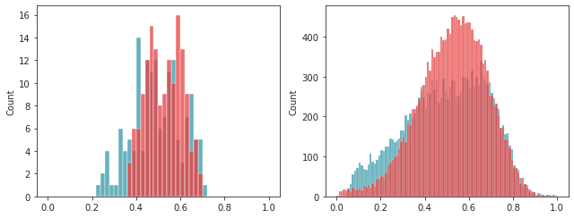
gr_ca.avg()
d2p[f'ca2(not-pr)\nb={b}'.replace(' ', '')] = gr_ca.trim2d(gr_ca.project_vec())
_ = quick_show(d2p, vmin=0.1, vmax=1.0, figsize=(24, 12), ylabel_fontsize=14)
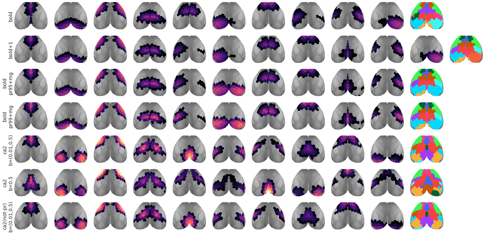
sns.histplot(h_avg_bo_10, bins=np.linspace(0, 1, 51))
sns.histplot(h_avg_bo_11, bins=np.linspace(0, 1, 51), color='g')
sns.histplot(h_avg_bo_mg, bins=np.linspace(0, 1, 51), color='tomato')
<AxesSubplot:ylabel='Count'>
trh_ca_10 = gr_ca.trim2d(gr_bo.project_vec(h_avg_ca_10, add_disjoint=False))
trh_bo_10 = gr_ca.trim2d(gr_bo.project_vec(h_avg_bo_10, add_disjoint=False))
trh_bo_11 = gr_ca.trim2d(gr_bo.project_vec(h_avg_bo_11, add_disjoint=False))
trh_bo_mg = gr_ca.trim2d(gr_bo.project_vec(h_avg_bo_mg, add_disjoint=False))
vmin = min(np.nanmin(h_avg_ca_10), np.nanmin(h_avg_bo_10), np.nanmin(h_avg_bo_11), np.nanmin(h_avg_bo_mg))
vmax = max(np.nanmax(h_avg_ca_10), np.nanmax(h_avg_bo_10), np.nanmax(h_avg_bo_11), np.nanmax(h_avg_bo_mg))
kw_im = {
'vmin': vmin,
'vmax': vmax,
'cmap': 'icefire',
}
vmin, vmax
(0.23037689538563905, 0.724035911433707)
fig, axes = create_figure(1, 4, (13.5, 2.4))
im = axes[0].imshow(mwh(trh_ca_10['proj-top'][0] < vmin, trh_ca_10['proj-top'][0]), **kw_im)
axes[0].set_title('Ca 10', fontsize=15, y=1.04)
plt.colorbar(im, ax=axes[0])
im = axes[1].imshow(mwh(trh_bo_10['proj-top'][0] < vmin, trh_bo_10['proj-top'][0]), **kw_im)
axes[1].set_title('Bold 10', fontsize=15, y=1.04)
plt.colorbar(im, ax=axes[1])
im = axes[2].imshow(mwh(trh_bo_11['proj-top'][0] < vmin, trh_bo_11['proj-top'][0]), **kw_im)
axes[2].set_title('Bold 11', fontsize=15, y=1.04)
plt.colorbar(im, ax=axes[2])
im = axes[3].imshow(mwh(trh_bo_mg['proj-top'][0] < vmin, trh_bo_mg['proj-top'][0]), **kw_im)
axes[3].set_title('Bold 11 --> 10', fontsize=15, y=1.04)
plt.colorbar(im, ax=axes[3])
remove_ticks(axes)
plt.show()
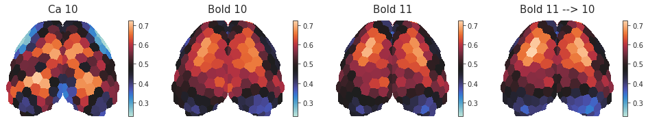
sp_stats.pearsonr(h_avg_bo_10, h_avg_bo_mg)
(0.9207048579946774, 3.561061905557345e-63)
sp_stats.pearsonr(h_avg_bo_10, h_avg_bo_11)
(0.9580061746150019, 2.8609405138619793e-83)
sp_stats.pearsonr(h_avg_bo_mg, h_avg_bo_11)
(0.9634534518516699, 1.045062568998126e-87)
sp_stats.pearsonr(h_avg_bo_10, h_avg_ca_10)
(0.4332918165008459, 2.4652039288401117e-08)
sp_stats.pearsonr(h_avg_bo_mg, h_avg_ca_10)
(0.3801225500857732, 1.3629250608234312e-06)
Conclusion: for entropy do not use mg, mg is just for visualization of communities¶
For other statistics also do not use mg, just find out how to cut data from say num k = 11 and then somehow average the two communities to be mg-ed and that gives u a single number for that community
Difference map¶
ca_10 vs bo_10¶
y1 = h_bo_10.reshape(-1, h_bo_10.shape[-1])
y2 = h_ca_10.reshape(-1, h_ca_10.shape[-1])
y1.shape, y2.shape
((120, 152), (120, 152))
def statistic(a, b, axis):
return bn.nanmean(a - b, axis=axis)
test = sp_stats.permutation_test(
data=(y1, y2),
statistic=statistic,
permutation_type='samples',
alternative='two-sided',
n_resamples=int(1e3),
vectorized=True,
random_state=42,
batch=5,
axis=0,
)
tr_statistic = gr_ca.project_vec(test.statistic, add_disjoint=False, thres=-np.inf)
tr_pvalue = gr_ca.project_vec(test.pvalue, add_disjoint=False, thres=-np.inf)
tr_statistic = gr_ca.trim2d(tr_statistic)
tr_pvalue = gr_ca.trim2d(tr_pvalue)
fig, axes = create_figure(1, 3, (12, 3))
alpha = 0.05
vminmax = np.max(np.abs(test.statistic))
im = axes[0].imshow(
mwh(tr_statistic['top'] == 0, tr_statistic['proj-top'][0]),
cmap='bwr', vmin=-vminmax, vmax=vminmax)
axes[0].set_title('statistic', fontsize=15, y=1.05)
plt.colorbar(im, ax=axes[0])
x = tr_statistic['proj-top'][0].copy()
x[x > 0] = 1
x[x < 0] = -1
x[tr_pvalue['proj-top'][0] > alpha] = 0
im = axes[1].imshow(
mwh(tr_pvalue['top'] == 0.0, x),
cmap='bwr', vmin=-1.5, vmax=1.5)
axes[1].set_title('red: bo > ca\nblue: bo < ca', fontsize=15, y=1.05)
plt.colorbar(im, ax=axes[1])
im = axes[2].imshow(
mwh(tr_pvalue['top'] == 0, tr_pvalue['proj-top'][0]),
cmap='Spectral_r', vmin=alpha, vmax=1)
axes[2].set_title('pval', fontsize=15, y=1.05)
plt.colorbar(im, ax=axes[2])
remove_ticks(axes)
plt.show()
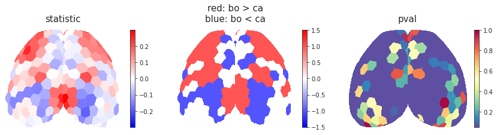
ca_10 vs bo_mg¶
y1 = h_bo_mg.reshape(-1, h_bo_mg.shape[-1])
y2 = h_ca_10.reshape(-1, h_ca_10.shape[-1])
y1.shape, y2.shape
((120, 152), (120, 152))
def statistic(a, b, axis):
return bn.nanmean(a - b, axis=axis)
test = sp_stats.permutation_test(
data=(y1, y2),
statistic=statistic,
permutation_type='samples',
alternative='two-sided',
n_resamples=int(1e3),
vectorized=True,
random_state=42,
batch=5,
axis=0,
)
tr_statistic = gr_ca.project_vec(test.statistic, add_disjoint=False, thres=-np.inf)
tr_pvalue = gr_ca.project_vec(test.pvalue, add_disjoint=False, thres=-np.inf)
tr_statistic = gr_ca.trim2d(tr_statistic)
tr_pvalue = gr_ca.trim2d(tr_pvalue)
fig, axes = create_figure(1, 3, (12, 3))
alpha = 0.05
vminmax = np.max(np.abs(test.statistic))
im = axes[0].imshow(
mwh(tr_statistic['top'] == 0, tr_statistic['proj-top'][0]),
cmap='bwr', vmin=-vminmax, vmax=vminmax)
axes[0].set_title('statistic', fontsize=15, y=1.05)
plt.colorbar(im, ax=axes[0])
x = tr_statistic['proj-top'][0].copy()
x[x > 0] = 1
x[x < 0] = -1
x[tr_pvalue['proj-top'][0] > alpha] = 0
im = axes[1].imshow(
mwh(tr_pvalue['top'] == 0.0, x),
cmap='bwr', vmin=-1.5, vmax=1.5)
axes[1].set_title('red: bo > ca\nblue: bo < ca', fontsize=15, y=1.05)
plt.colorbar(im, ax=axes[1])
im = axes[2].imshow(
mwh(tr_pvalue['top'] == 0, tr_pvalue['proj-top'][0]),
cmap='Spectral_r', vmin=alpha, vmax=1)
axes[2].set_title('pval', fontsize=15, y=1.05)
plt.colorbar(im, ax=axes[2])
remove_ticks(axes)
plt.show()
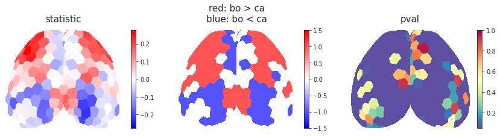
from statsmodels.stats.multitest import multipletests
sns.regplot(h_avg_ca_10, h_avg_bo_10)
<AxesSubplot:>